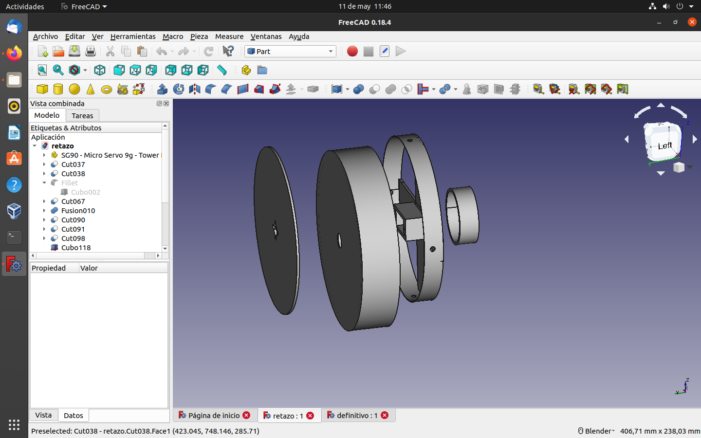
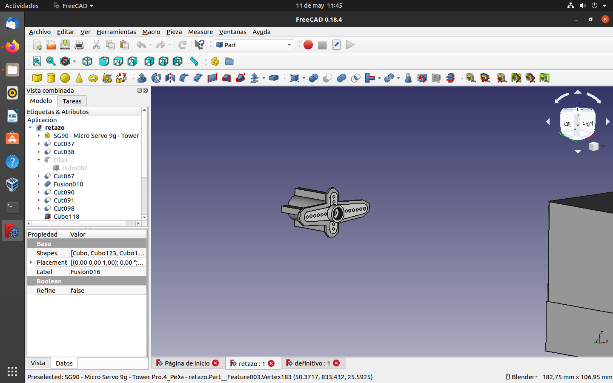
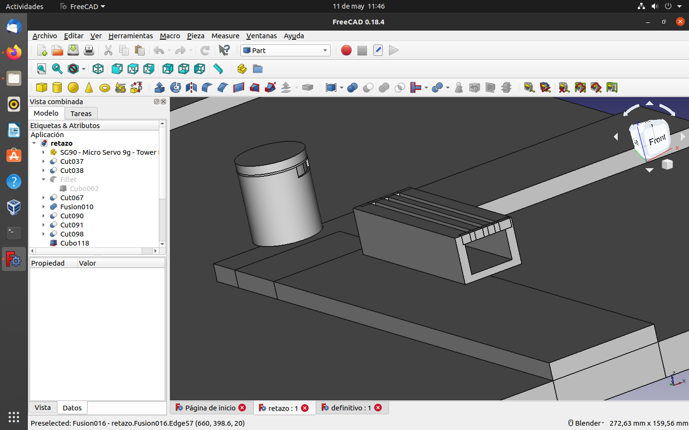

3D tailerrean ikasitako guztia kontuan hartuta, garabi bat eta auto bat 3Dan eraikitzea / diseinatzea lortu dugu.

Eraiki genuen lehenengo gauza garabiaren oinarria eta nora joango den izan zen, errepidea duen oinarria 3D makinan sartu ez denetik ez dugu inprimatu. Pieza hau garabiaren garrantzitsuenetako bat da, garabi osoa biratzen duena da, zilindro batez eta lau karratu fusionatuz osatuta dago. Gero, beste pieza bat pixka bat handiagoa egin genuen eta guztiarekin bat egin genuen.
Pieza hauek garabi osoa biratzen duen oinarria dira, piezarik lodiena beherantz doana da, orduan eskuinean dagoena motorrarentzako lotura bat da eta aurreko piezaren irekidura. txikiena barrura doa ardatza funtzionatzeko eta launena garabian bertan sartzen da.
komplementu batzuk egin dugu banku eta paperontzi bat adibidez.

Tailerrean 3D auto nahiko ona eraiki berri genuenez diseinu bera hartu genuen eta berritasun batzuk gehitu ditugu, esate baterako, motxila bat bateria kutxaren euskarrian eta pixka bat gehiago ampliantu dugu kotxea sentsoreak jartzeko.
